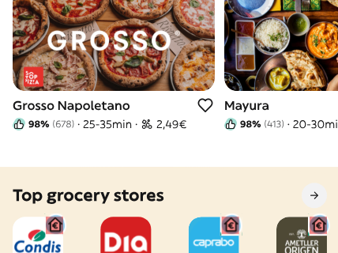
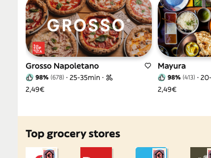

QA-01
Hero, address, and search controls are off-spec
P1The first viewport loses the reference’s pill geometry, visual rhythm, and decorative curve.


address radiussearch radius / shadow| Property | Expected | Actual | Tolerance / result |
|---|---|---|---|
| Hero fill | #ffc042 | #ffcf68 | Exact · fail |
| Address + search | 999px pills; no added shadow | 10px / 12px; shadows added | Exact · fail |
| Header curve | Visible | Hidden | Exact · fail |
Recommended fix: restore the base hero/input tokens, reference spacing, and the header curve.